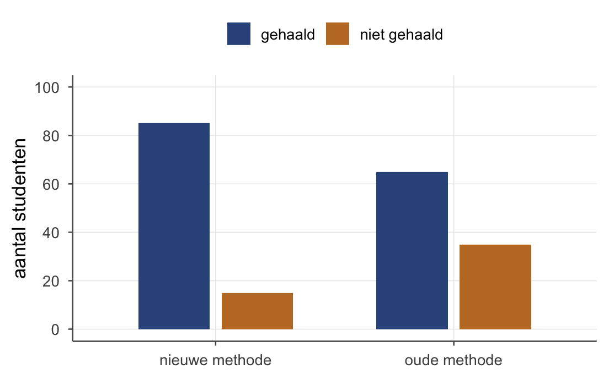

Thema 11 · Chi-kwadraat & Simpson
Deel 6 — Categorieën · aantallen tellen
Van getallen naar categorieën
Tot nu toe verdiende elke meting een getal op een schaal: pienterheid, lengte, leeftijd. Maar veel waarnemingen zijn categorisch: bruin / grijs / zwart, geslaagd / gezakt, links / midden / rechts. Daar begin je niet met gemiddelden, maar met tellen. En daar past één toetsfamilie: de chi-kwadraat.
Twee smaken:
- Goodness-of-fit — past mijn ene categorische variabele bij een verwachte verdeling? (Eén rij.)
- Onafhankelijkheid — hangen twee categorische variabelen samen? (Een kruistabel.)
Beide draaien om hetzelfde recept: vergelijk geobserveerd met verwacht onder \(H_0\), en tel de gestandaardiseerde afwijkingen op. Het is opnieuw DATA = FIT + RESIDU: wat zien we (\(O\)), wat verwacht het model (\(E\)), en hoeveel blijft er over (\(O - E\))?
Chi-kwadraat goodness-of-fit
Onder \(H_0\) (gelijke verdeling) verwachten we \(90/3 = 30\) egels per kleur. Bereken voor elke categorie het verschil en kwadrateer dat (we kwadrateren zodat plus- en min-afwijkingen elkaar niet wegvlakken — net als bij de blauwe vierkantjes van de variantie in thema 1), gedeeld door \(E\):
| kleur | geobs. \(O\) | verw. \(E\) | \(O - E\) | \(\dfrac{O-E}{\sqrt{E}}\) | \(\dfrac{(O-E)^2}{E}\) |
|---|---|---|---|---|---|
| bruin | 40 | 30 | +10 | +1,83 | 3,33 |
| grijs | 30 | 30 | 0 | 0 | 0 |
| zwart | 20 | 30 | −10 | −1,83 | 3,33 |
| χ² = 6,67 |
Vrijheidsgraden: \(df = k - 1 = 3 - 1 = 2\). Kritieke waarde \(\chi^2_{.05, df=2} = 5{,}99\) (uit de tabel). Onze 6,67 is groter → verwerp de nulhypothese: de pelskleuren zijn níét gelijk verdeeld.
Maar \(\chi^2\) zelf zegt alleen dát het patroon afwijkt — de cellen vertellen waar. Daarvoor lees je de gestandaardiseerde residuen \(\dfrac{O-E}{\sqrt{E}}\) (de vierde kolom): bruin zit +1,83 boven verwachting, zwart −1,83 eronder, grijs precies goed. Een residu voorbij ongeveer ±2 is een opvallende cel. En kwadrateer je zo’n residu, dan krijg je exact die cel z’n bijdrage aan \(\chi^2\) (\(1{,}83^2 \approx 3{,}33\)) — samen weer 6,67. Zo zie je niet alleen of het afwijkt, maar welke kleur het verschil maakt.
Chi-kwadraat onafhankelijkheid (kruistabel)
Onder \(H_0\) (onafhankelijkheid) berekenen we de verwachte waarde per cel als \(E = \dfrac{\text{rij-totaal} \cdot \text{kolom-totaal}}{N}\):
- E(nieuw, gehaald) = \(100 \cdot 150 / 200 = 75\)
- E(nieuw, niet) = \(100 \cdot 50 / 200 = 25\)
- E(oud, gehaald) = \(75\), E(oud, niet) = \(25\)
Vervolgens \(\sum (O-E)^2/E\) over alle vier de cellen:
\[\chi^2 = \frac{(85-75)^2}{75} + \frac{(15-25)^2}{25} + \frac{(65-75)^2}{75} + \frac{(35-25)^2}{25}\] \[= 1{,}33 + 4{,}00 + 1{,}33 + 4{,}00 = 10{,}67\]
Vrijheidsgraden voor een kruistabel: \(df = (r-1)(k-1) = 1 \cdot 1 = 1\). Kritieke waarde \(\chi^2_{.05, df=1} = 3{,}84\). Onze 10,67 is fors groter → verwerp de nulhypothese: de tentamen-uitslag hangt samen met de oefenmethode (in dit verzonnen voorbeeld haalt de nieuwe methode vaker).
Welke cel drijft dat? Weer de gestandaardiseerde residuen \(\dfrac{O-E}{\sqrt{E}}\): de twee niet gehaald-cellen springen eruit (\(\pm 2{,}0\): \(\tfrac{15-25}{\sqrt{25}} = -2{,}0\) bij nieuw, \(+2{,}0\) bij oud), terwijl de gehaald-cellen kleiner zijn (\(\pm 1{,}15\)). Daar — bij wie het niet haalde — wijkt de werkelijkheid het sterkst van onafhankelijkheid af.
Eén waarschuwing: \(\chi^2\) wordt vanzelf groter bij een grotere steekproef. Een hoge \(\chi^2\) betekent dus significant, niet automatisch een sterk verband — maten voor de sterkte (zoals Cramérs V) leer je later.

De val van Simpson — een verband dat omkeert
Alles wat we sinds correlatie (thema 5) doen heeft één gevaar: een globaal verband kan subgroepen verbergen. Een kruistabel laat het globale plaatje zien. Maar soms verbergt dat plaatje een omgekeerd verband dat binnen subgroepen leeft. Dat is Simpson’s paradox, en je moet ’m kennen — anders trek je serieus de verkeerde conclusie.
Binnen elke opleiding doen meisjes het beter; maar in het totaal lijken jongens beter. Hoe kan dat? Doordat de groepen zich anders verdelen over de opleidingen. Veel meisjes deden de moeilijke opleiding (waar iederéén slechter scoort), en veel jongens de makkelijke. Dat trekt het meisjes-gemiddelde naar beneden en het jongens-gemiddelde omhoog.

Oefenen
Tot slot
Chi-kwadraat brengt de toets naar categorieën, met steeds dezelfde gedachte: vergelijk wat je ziet met wat je verwacht onder \(H_0\), en tel de gestandaardiseerde afwijkingen op. En Simpson herinnert je dat aggregeren een vorm van vergeten is — de subgroepen zwijgen niet, je hoort ze alleen niet meer.
Werkboek OZP 1 · Thema 11, versie 0.1 (handrekenen & theorie; SPSS later). Doorlopend voorbeeld: de egels (+ studenten).